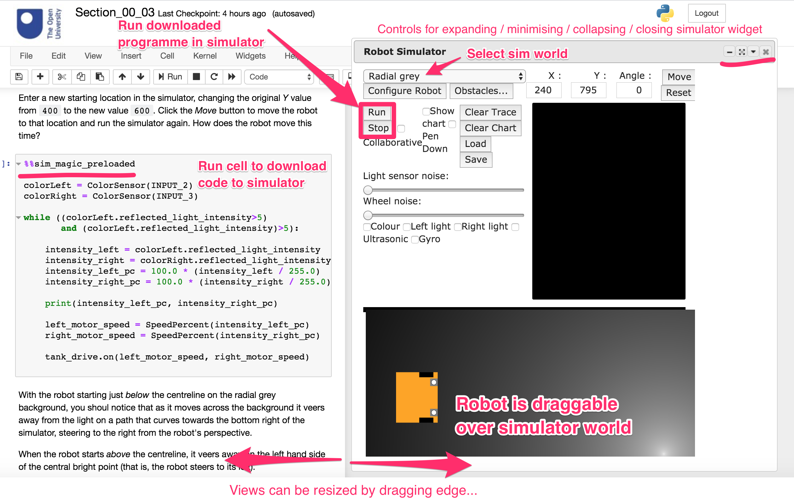

2 The RoboLab simulated on-screen robot (nbev3devsim)¶
The nbev3devsim simulator is arranged slightly differently to the original ev3devsim simulator in order to develop a workflow that more naturally suits notebook style working.
Rather than saving programmes to separate files, each individual robot simulator programme is defined within its own notebook code cell, and can then be “downloaded” to the simulated robot. This means you can keep track of a how a programme develops by writing each version of a programme in its own code cell.
Layout is subject to change…

An expanded range of predefined worlds is available that can be loaded into the simulator, as image files, from a drop down menu. (Source code for generating the background image files is also available in a notebook in the backgrounds/ directory.) When some worlds are loaded in, the robot’s initial (default) location in that world is also specified; other robot settings, such as the positioning of the sensors, may also be initialised when a particular backgound is loaded.
As in ev3devsim, obstacles can be added to a world using a configuration file opened by clicking the Obstacles button. The simulated robot is also still configured via a configuration menu.
The simulated robot can be dragged and placed on the simulated background and moved to a specifed location via the Move button (the target co-ordinates are updated when the robot is dragged to a new location). A new Reset button wil move the robot back to it’s default location in the world.
[TO DO - would also be useful to be able to rotate the robot?]
2.1 Activity: Running a program¶
QUIck demo - get a feel for the simulator, even the ev3devsim one? Or maybe provide this via simple static demos as standalone HTML files? Or actually demo nbev3devsim here?
Move robot forward¶
from ev3dev2.motor import MoveSteering, OUTPUT_B, OUTPUT_C
motor_pair = MoveSteering(OUTPUT_B, OUTPUT_C)
Move robot forward for 3 seconds¶
motor_pair.on_for_seconds(steering=0, speed=50, seconds=3)
TO DO - WE MAY NOT NEED THIS IF WE WORK IN THE NOTEBOOK VIA A WIDGET
Save the programme with a meaningful file name (for example, move_a_robot.py) and clear the programme editor by deleting all the contents from it. If you Run the (non-existent) programme, the robot should not move.
Load the file you saved back into the programme window, and run it again. This time the robot should move for 3 seconds again.
TO DO - LINE NUMBER OPTIONS IN EDITOR?
It is possible to operate the simulated robot in ‘show trail’ or ‘pen-down’ mode. This enables you to see the path the robot follows.
Check the Show trail button in the simulator. Run the program again to see the robot’s trail.
TO DO - keyboard shortcuts would be useful.
TO DO - a simulator run status indicator would be useful.
2.2 The Program window¶
So far we have taken a very quick look at how to download programmes from a notebook code cell and run them in the simulator.
the Program editor and Simulator windows. In RoboLab Session 2 there will be a much more detailed discussion of computer programs and the principles behind how they work, and the contents of these windows will become clearer. For now let’s look again at the Program window as it relates to the Move_a_robot program, to see the essential elements of the program and why the robot behaves as it does.
If you don’t already have the move_a_robot.py program open, reopen it now.
The move_a_robot.py program is displayed in the Program window as follows:
# Move robot forward
from ev3dev2.motor import MoveSteering, OUTPUT_B, OUTPUT_C
motor_pair = MoveSteering(OUTPUT_B, OUTPUT_C)
# Move robot forward for 3 seconds
motor_pair.on_for_seconds(steering=0, speed=50, seconds=3)
The program may look a bit cryptic to start with, but it is built up from some very simple steps.
The # character at the start of a line is a line comment marker that tells the simulator to ignore the rest of the line. This provides a way of putting non-program text into programs to make the program more readable. The first comment just gives a title describing the program.
The next line, starting from ev3dev2.motor import tells the programme to import some items from the ev3dev2.motor Python package. The import statement commands make additional commands available to our programme that are not defined as part of the basic Python language. In this case, the items define the various motor output ports and a simple programme command that can turn the motors on for a specified time.
The OUTPUT_B and OUTPUT_C items represent fixed constant identifier labels. The underlying simulator predefines these values so that they refer to the simulated motor outputs used by the simulator.
The motor_pair = MoveSteering(OUTPUT_B, OUTPUT_C) line associates a motor_pair name or label (also known as an identifier) with a control block that implements a steering wheel style controller (MoveSteering); this steering controller uses the two motors on the specified outputs to steer the robot. The controller expects two values passed to it in the form MoveSteering(LEFT_WHEEL_OUTPUT, RIGHT_WHEEL_OUTPUT). These two values are then used to configure the output ports used by
the steering block so that they can deliver power to the motors.
Once configured, the motor_pair can be told to turn on the motors for a specified period of time (motor_pair.on_for_seconds).
Note that you can use the underscore character as part of a name to make things clearer, but you must not use spaces or other punctuation when creating an identifier. For example, motor_pair can be recognised as a single name, but motor pair would be treated as two names (motor and pair) and result in an error. You are free to make up names as you wish as long as they meet these simple rules. However, some names are already reserved for use as program commands and you must also
avoid these names.
When telling the steering controller to turn on the motors for a specified time, we need to provide it with three essential pieces of information:
a
steeringvalue, which might be though of as a “steering wheel” angle in degrees for the robot; the 0 degrees angle means drive straight ahead;a
speedvalue, which is the speed at which the wheels turn;a
secondsduration which specifies how long the simulated motors powering the wheels should be turned on for.
All three values are required to move the robot.
To see all of this working, run the program again.